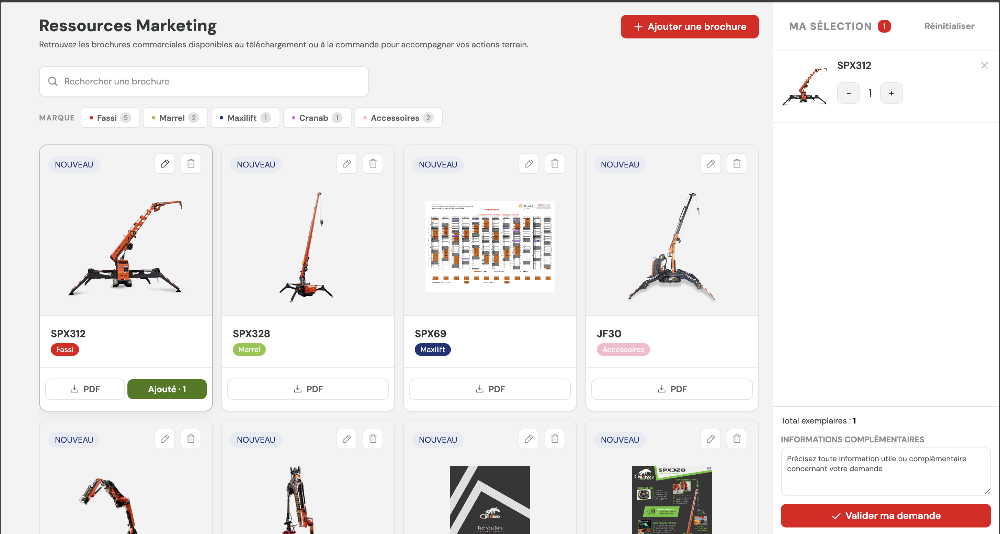
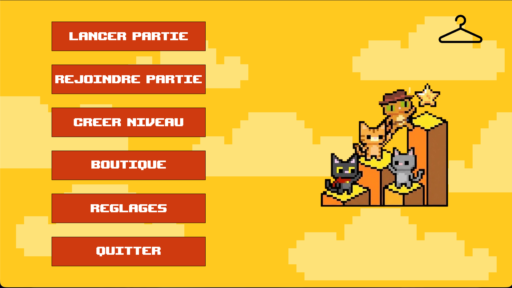
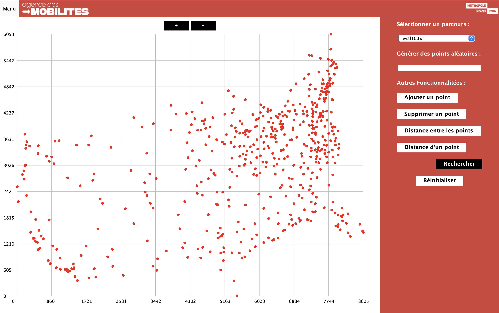
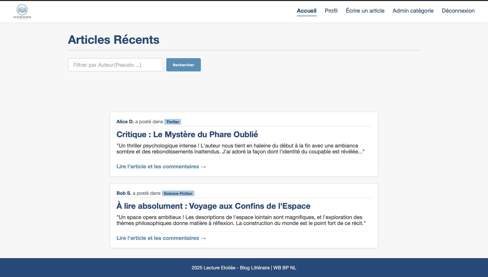

Développement Front-end (WeWeb/Vue.js) et Back-end (Xano) d'un portail B2B pour le réseau Fassi France. Création de composants sur mesure et intégration d'APIs.

Jeu de plateforme coopératif (2 à 4 joueurs) développé en méthode Agile (Scrum). Le projet inclut un système de synchronisation multijoueur.

Développement d'une application d'optimisation de parcours touristique. Algorithmes sur les graphes pour minimiser le temps de trajet.

Conception et développement d'un blog dynamique. Publication de critiques, notation et gestion de bibliothèque personnelle.
Étudiant en 2ème année de BUT Informatique à l'université Claude Bernard Lyon 1, je me spécialise en Réalisation d’Applications.
Passionné par le développement logiciel et web, j'allie une approche rigoureuse à une maîtrise technique polyvalente afin de remplir mes objectifs, c'est-à-dire réaliser des solutions innovantes.
Fort d'une pratique de 10 ans de basketball en compétition, je cultive l'esprit d'équipe et la persévérance.
Je maîtrise des environnements variés et je suis toujours à la recherche de projets concrets pour mettre en œuvre mes compétences.
Sports : Pratique régulière de sports collectifs et de sports de combat, développant mon esprit d'équipe, ma discipline et ma persévérance.
Gaming : Passionné par les jeux d'aventure, de simulation et les FPS compétitifs.
Culture & Voyage : Grand amateur de mangas et passionné par la découverte de nouveaux horizons à travers le voyage.